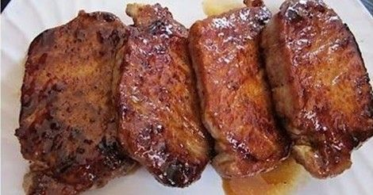

Home
Super Simple Pork Chops

Description
Pork chops with a sweet glaze.
Ingredients
- 4 boneless pork loin chops
- 1/4 cup of apple juice
- 1/4 cup of maple syrup
Steps
-
Heat large skillet over medium-high heat. Brown pork chops in pan for
about 4 to 5 minutes per side. Pour in apple juice and maple syrup;
reduce heat and simmer unil the juice has reduced and thickened slightly.
-
Cook until pork is no longer pink in the center. Internal temperature
should be 145 degrees F.